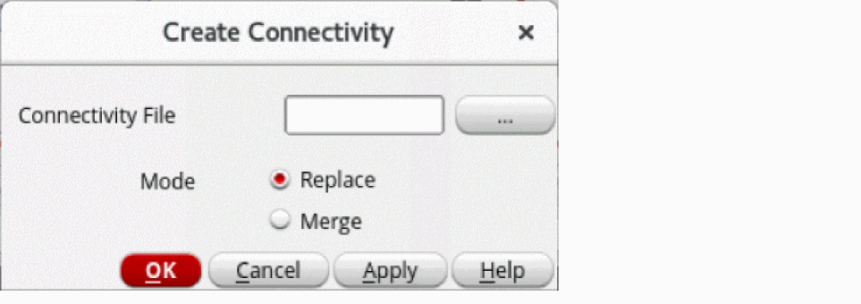
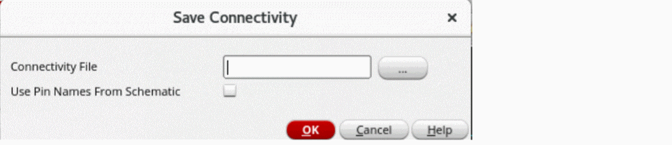

Creating and Saving Connectivity Information in Package Schematic
You can create and save connectivity information for the package schematic in your production design flow. It allows to save the connectivity information from another schematic view and restore it to a new schematic view. It also enables you to do some connectivity ECO using the Text Editor by creating the connectivity file, modifying it, and finally reloading it. The connectivity information, such as net creation and instance pin connections to the net, is saved and used from a text file. There are many ways to create and save the connectivity information. For example, you can create a schematic from scratch by using a connectivity file, redo the connectivity of an existing schematic by using a connectivity file, or create a connectivity file, modify, and reload the file for updated connectivity information in the schematic. You can create a connectivity file in any of the following ways:
To save the connectivity information from the schematic into the specified file:
-
Choose Module – Connectivity – Create Connectivity. The Create Connectivity form opens to input the connectivity file name.
 - Specify a connectivity file.
- Select one of the following values of Mode for creating the connectivity file:
-
Click OK.
The connectivity file contains data about connectivity in the following format:
Net_Name<space>Instance_Name1/Pin_Name<space>Instance_Name2/Pin_Name…
Example:REF i1/OUT i2/IN i3/IN i4/IN
Connectivity information extraction follows a label-based approach. A label of the specified net is created on wire stubs. Before extracting connectivity, the tool checks for the presence of wire stubs for all instance terminals in the package layout and creates missing wire stubs where required.
To save the connectivity information from the schematic into the specified file:
-
Choose Module – Connectivity – Save Connectivity. The Save Connectivity form is displayed.
 - Specify the connectivity file.
- Click OK.
Related Topic
Extracting Connectivity Information from Package Layout
Return to top